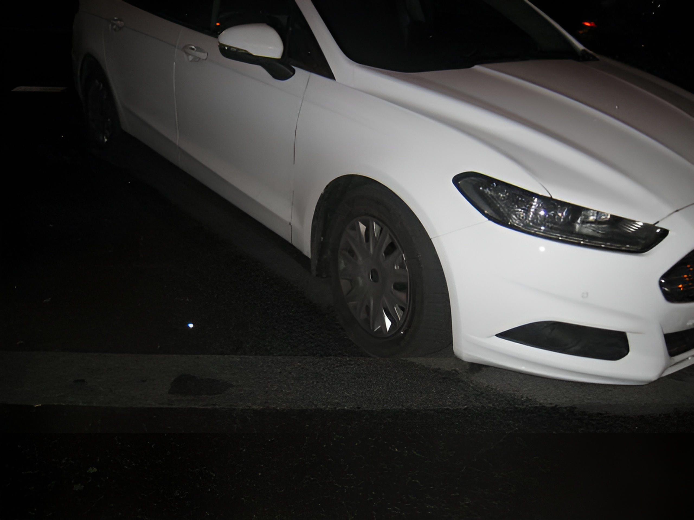

33.
Human beings have a need (probably based in biology) for something that we will call the “power process.” This is closely related to the need for power (which is widely recognized) but is not quite the same thing. The power process has four elements. The three most clear-cut of these we call goal, effort and attainment of goal. (Everyone needs to have goals whose attainment requires effort, and needs to succeed in attaining at least some of his goals.) The fourth element is more difficult to define and may not be necessary for everyone. We call it autonomy and will discuss it later (paragraphs 42-44).